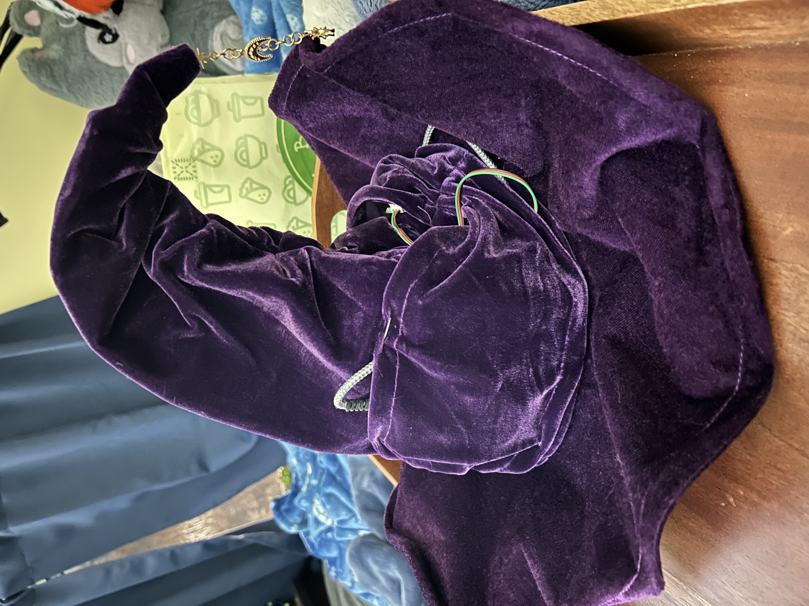
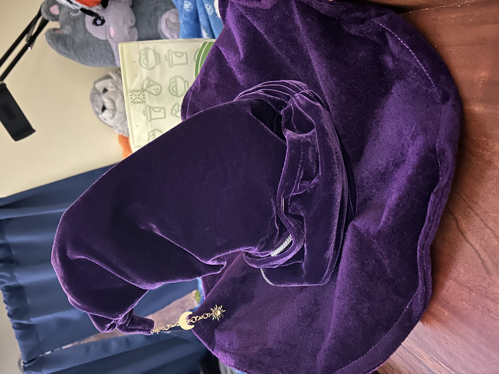
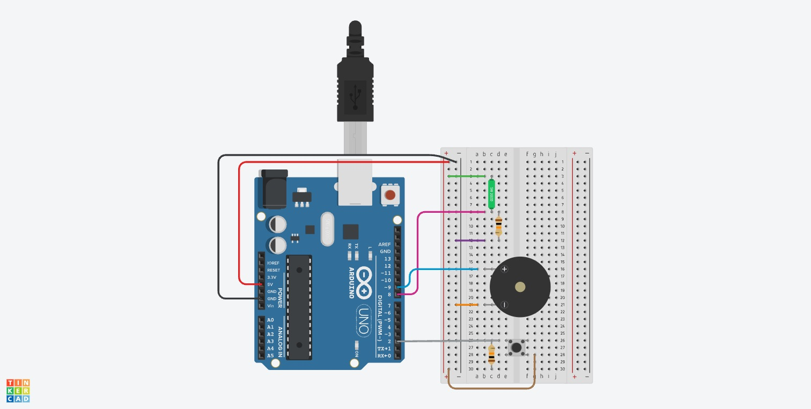

Project Runway: Interactive Witch Hat
Project Goal
For my Project Runway assignment, I wanted to create a wearable experience that used a familiar piece of clothing in an interactive way. I chose a witch hat that could “cast a spell” when someone took it off and gently waved it. Rather than requiring a traditional controller, the experience uses the natural actions of wearing, removing, and moving the hat. A piezo speaker plays a magical sound effect when the spell is triggered.
Experience Narrative
The experience begins with the witch hat being worn. A push-button module inside the hat is pressed while the hat is on the user's head. When the user removes the hat, the button is released and the system becomes ready to detect a spell-casting motion. Once the hat is held in its starting orientation and then tilted, the piezo plays a short magical melody. The sound plays only once per removal. Putting the hat back on presses the button again and resets the interaction for the next spell.
Materials
- Witch hat
- Arduino Uno
- Breadboard and jumper wires
- Four-pin tilt sensor and 10 kΩ resistor
- Digital push-button module
- Passive piezo speaker
- Portable USB power bank and USB cable
- Safety pins for securing the electronics within the hat's fabric
Development Process
I started by testing the individual components before combining them. The tilt sensor detects a change in
orientation, the piezo produces sound through the Arduino's tone() function, and the push button
determines whether the hat is being worn. I initially tested a small push button on the breadboard, then replaced
it with a larger digital push-button module that would be easier to position inside the hat.
The new button module worked differently from the original button: it read HIGH when pressed and LOW when released. I updated the code to match that behavior. I also tested the entire circuit with a portable power bank so the hat could work without being connected to a computer.
One of the biggest parts of the process was designing the sound. I tried several different magical effects, including bright, sparkling notes and darker, mysterious tones. Some versions sounded too much like a video game, while others had rapid notes or pitch sweeps that sounded robotic. I eventually chose a slower sound with an eerie beginning, a gradual rise in pitch, and a sustained final note to represent the spell being released.
Assembling the Wearable
The hat already had two decorative, stretchy fabric straps around the base of its pointed section. Although these were not actual pockets because they were open at the bottom, I realized I could use them to conceal the electronics. I slid the Arduino into one side and pulled the fabric up and over it. I used safety pins to make the bottom opening smaller so the board could not slide out and to keep the fabric stretched over the Arduino.
I used the strap on the other side to hold the portable battery pack in the same way. The push-button module was harder to conceal, but I could tuck it into the fabric for the demonstration. Using the existing straps let me hide much of the electronics without permanently changing the hat.


Circuit Schematic

Testing and Final Result
After putting everything together, I tested the complete interaction while wearing the hat. The button detects when the hat is on, removing the hat enables the spell, and tilting it triggers the magical sound. The sound plays once, and putting the hat back on resets the experience. I also confirmed that the setup works using the portable power bank.
Demonstration Video
Final Arduino Code
const int tiltPin = 8;
const int piezoPin = 9;
const int buttonPin = 2;
bool readyToCast = false;
bool spellCast = false;
void setup() {
pinMode(tiltPin, INPUT);
pinMode(piezoPin, OUTPUT);
pinMode(buttonPin, INPUT);
Serial.begin(9600);
}
void loop() {
int tiltState = digitalRead(tiltPin);
int buttonState = digitalRead(buttonPin);
// Button pressed: hat is being worn.
if (buttonState == HIGH) {
readyToCast = false;
spellCast = false;
} else {
// Button released: hat has been removed.
if (tiltState == HIGH) {
readyToCast = true;
}
if (tiltState == LOW && readyToCast && !spellCast) {
Serial.println("Magic spell cast!");
playWitchSpell();
spellCast = true;
}
}
delay(50);
}
void playWitchSpell() {
// Mysterious opening.
tone(piezoPin, 220, 400);
delay(500);
tone(piezoPin, 233, 400);
delay(500);
tone(piezoPin, 311, 500);
delay(600);
// Slow magical buildup.
tone(piezoPin, 370, 450);
delay(550);
tone(piezoPin, 466, 450);
delay(550);
tone(piezoPin, 554, 500);
delay(600);
tone(piezoPin, 698, 550);
delay(650);
// Final transition and spell release.
tone(piezoPin, 932, 550);
delay(550);
tone(piezoPin, 1175, 750);
delay(800);
noTone(piezoPin);
}Reflection
I'm happy that the final project works the way I intended. The most interesting challenge was making the sound feel magical rather than like a series of electronic beeps. Testing different notes and pacing helped me create a sound that better fits the experience.
Attaching the electronics was another challenge. The fabric straps turned out to be useful for hiding the Arduino and battery, but the extra weight makes the hat noticeably heavier, and the hat itself feels a little small. The button is also not as hidden as I would ideally like. If I continued working on this project, I would look for a more comfortable way to mount the electronics and conceal the button. Even with those limitations, the hat successfully turns a familiar costume accessory into an interactive spell-casting experience.
References and Credits
- Arduino Language Reference – Reference for Arduino functions including digitalRead(), pinMode(), tone(), and delay().
- Autodesk Tinkercad – Used to create the circuit diagram.
- Physical Computing course sensor kit – Provided several electronic components used in the project.
- Spirit Halloween – Bought super cute witch hat from.